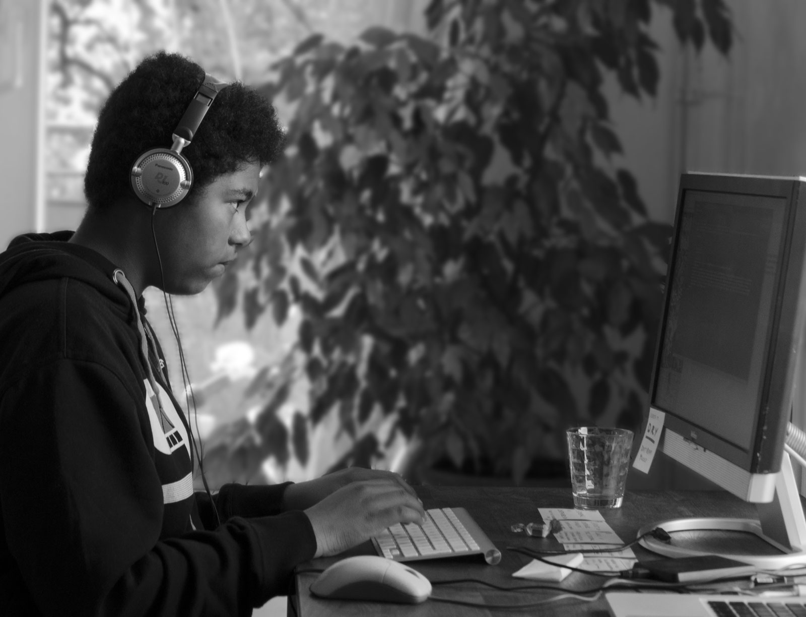
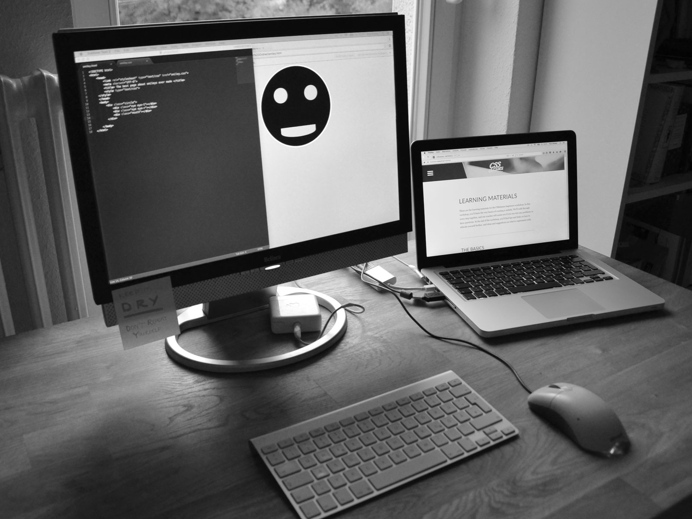

Learn more about the creator of myAWESOMEwebsite and the building process on this page.
My name is Paul Walker, I'm 15 years old and the creator of myAWESOMEwebsite, a project, which lastet 8 days and was my first big webpage. My goal was to give other beginners some knowledge about creating a website like this. In my whole 14 day learning process this website was important for me too. It gave me some extra knowledge too. Maybe you want to know something about me too. So, I'm from Berlin, Germany, where I live since I'm 1 year old. This is why I have a special connection to my home town. This actually why I have my favourite basketball team in Berlin, ALBA Berlin.
I grew up in the south of the city for 5 years, just straight outta ghetto. This might be, why I have a big affection to Rap, Hip Hop and Breakdance, but don't think, that's everything I'm doing, real "niggas" play video games too, things like NBA2K or Madden NFL. Yeah, if you try to fake your a normal black boy, you need to hear NWA and play NBA, but actually those are things I like. Other topic: I got a favourite NBA-Team in the Golden State Warriors too. And I got a favourite NFL team too, the Seattle Seahawks. My life is a lot about music, videogames and sports, but you need to concentrate on school too, right isn't. And don't forget, things like reading are part of a great life too, I'm not a ghetto guy like others, I'm clever and engaged, not like those other guys from german movies coming out of turkish districts. So don't take every word for real. 😀
In grade 10 I needed an internship. So, I did not found anything in half a year. But in the last moment my mum made up some contact to another known, just next to our house. This is why we started this big project, because he was a web designer and I wanted to do that to show some engagement. In 8 days I built a whole structure and wrote down that text out of my stomach. The combination of web designing and rap actually worked. This is why I'm looking quite amused like this:
 